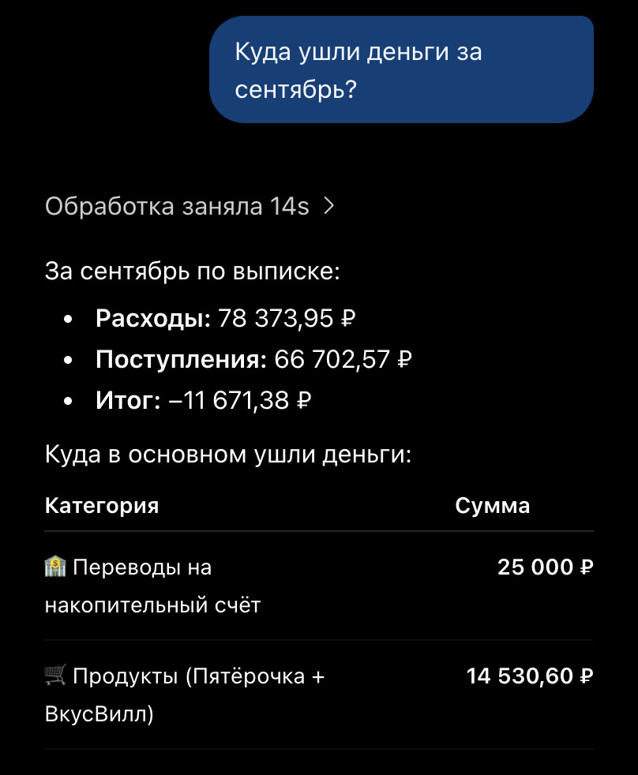
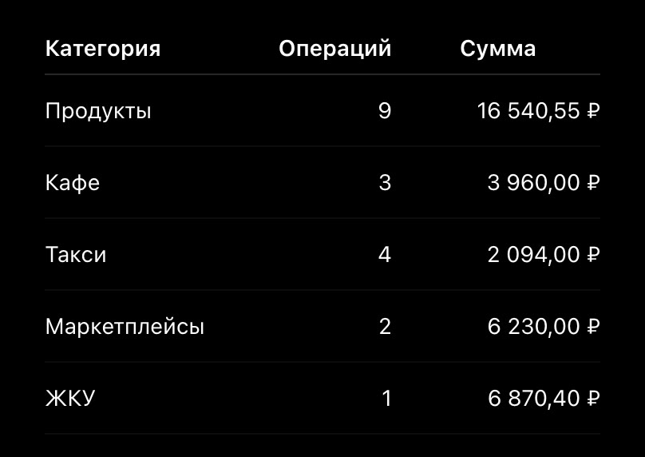
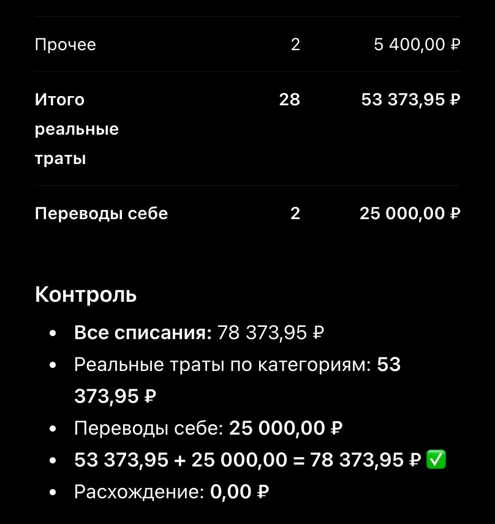

Бесплатные уроки · ChatGPT
Разложишь траты из выписки банка по категориям и проверишь итог одной строкой.
Зарплата пришла — и куда-то ушла. Ответ лежит в выписке из банка, но читать сорок строк с копейками никто не хочет. ChatGPT разберёт файл за полминуты: траты по категориям и итоги. Подвох в том, что часть чисел он считает программой, а часть — «в уме». Учимся просить так, чтобы считала программа, и проверять итог одной строкой.
Мы прикрепили выписку и спросили, как спросил бы любой: «Куда ушли деньги за сентябрь?» Через пятнадцать секунд пришла таблица:

Итоги верные: списаний 78 373,95 ₽, поступлений 66 702,57 ₽. ChatGPT даже сам заметил главное: 25 000 ₽ — не траты, а перевод на свой накопительный счёт, значит, на жизнь ушло около 53 374 ₽. А вот «Продукты» — 14 530,60 ₽. В выписке девять покупок в «Пятёрочке» и «ВкусВилле» на 16 540,55 ₽. Потерялись 2 009,95 ₽.
Мы посмотрели, как он считал. Программой — только общие итоги. Таблицу по категориям он собрал без неё, «в уме». Отсюда и ошибка: складывать девять сумм с копейками нейросеть без программы надёжно не умеет.
Главное в запросе — «кодом, не в уме» и проверка в конце: сумма по категориям должна сойтись со всеми списаниями. И сразу скажи, что переводы себе и возвраты — не траты.
Посчитай по прикреплённой выписке кодом, не в уме. 1) Разложи все списания по категориям: [продукты, кафе, такси, маркетплейсы, ЖКУ, связь и подписки, аптека, переводы людям, наличные, прочее]. 2) Переводы на свои счета и возвраты покажи отдельно — это не траты. 3) Внизу проверь: сумма по категориям плюс переводы себе должна равняться всем списаниям. 4) У каждой категории — сколько операций.


Все десять категорий совпали с нашим расчётом до копейки. Реальные траты — 53 373,95 ₽ за 28 операций, переводы себе — 25 000 ₽ отдельной строкой. Возврат за OZON (1 290 ₽) и кешбэк ChatGPT вынес в «не траты».
Контрольная строка не сходится — переспроси: «Сумма по категориям не равна всем списаниям. Найди кодом, какие операции потерялись».
Выгрузи свою выписку за прошлый месяц и убери из неё имена и номера карт. Попроси ChatGPT разложить траты по категориям кодом и сверь контрольную строку.
Урок рассчитан на сайт chatgpt.com; у нас был бесплатный план. Названия кнопок могут отличаться в приложении и после обновлений. Подписка на наше обучение не включает платные тарифы нейросетей.
ChatGPT — запросы урока проверены 5 октября 2026, бесплатный план. Выписка учебная: 33 операции и все суммы придуманы нами, правильные итоги посчитаны программой и сверены с ответами ChatGPT до копейки.
Следующий урок — «Резюме под вакансию без чужих навыков». Получишь резюме только из своего опыта и честно закроешь пробелы в сопроводительном письме.
Читать следующий урок